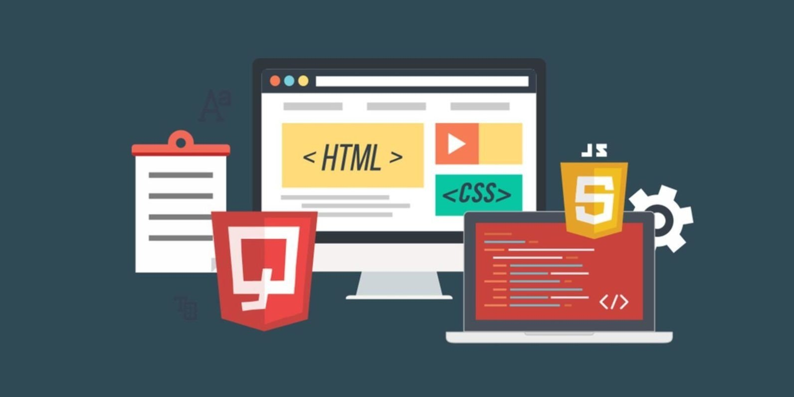

|  | |
¿Qué es Backend?El backend es la parte invisible pero esencial de un sitio, encargada de manejar
la lógica y el procesamiento de datos necesarios para que todo funcione de manera
correcta y segura. |
|
¿Qué hace un desarrollador Backend?Los desarrolladores back-end se encargan de hacer que la lógica del sitio funcione correctamente, que la información se transmita de manera segura y que el rendimiento de la aplicación no afecte la experiencia del usuario. |
|
¿Cuáles son los lenguajes de programación más utilizados en el desarrollo Backend?Algunos de los más populares y ampliamente adoptados son:
|
|
Licenciatura en Sistemas Computacionales© Copyright 2022. DE LA CRUZ GALLEGOS SEM YERALDI |
|